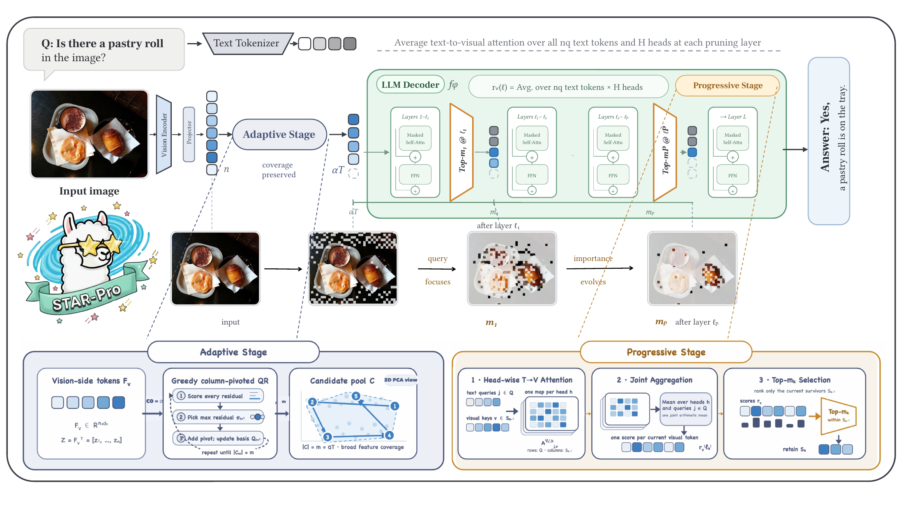
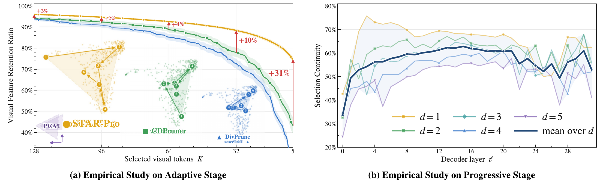
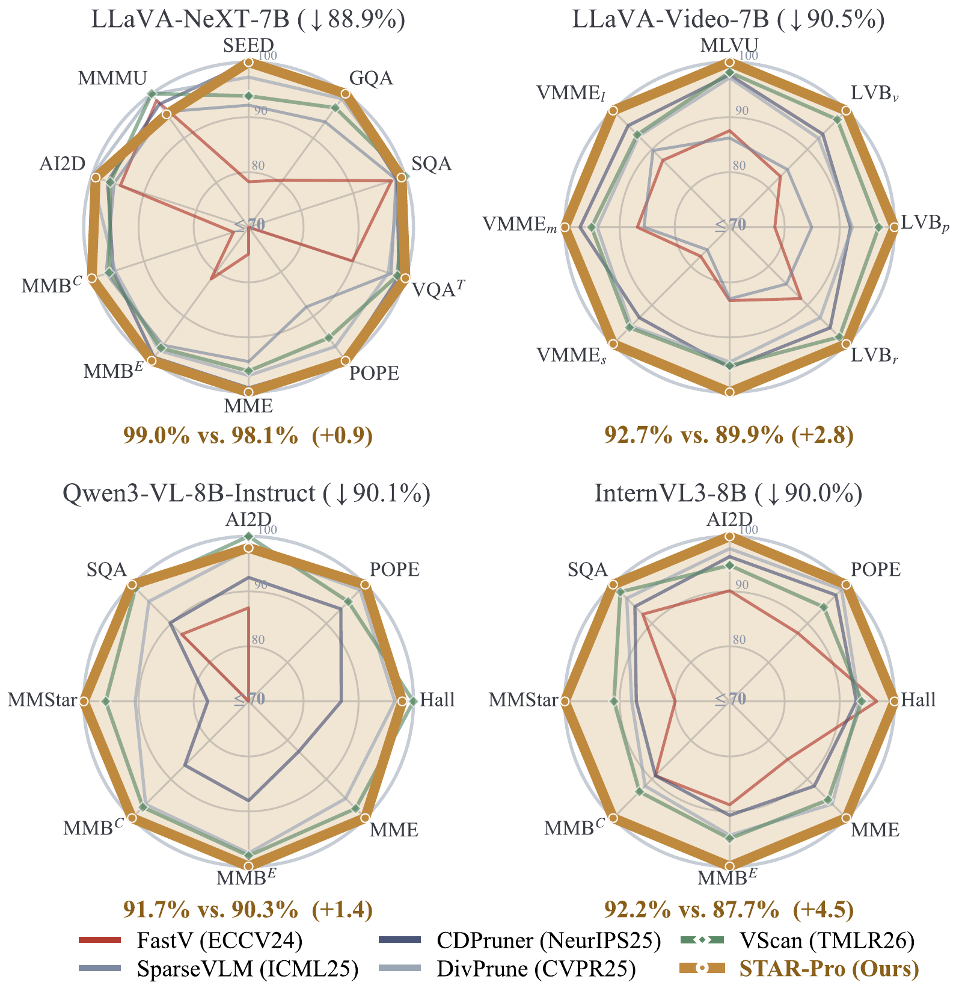
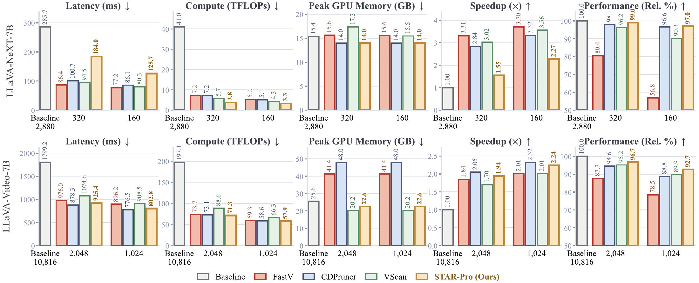

Training-free visual token pruning
STAR-ProStage-Wise Token Adaptive Reduction
with Progressive Refinement for Efficient
Large Vision-Language Models
* Equal contribution · † Corresponding author
arXiv preprint · September 2026
01 / Overview
Preserve coverage.
Refine progressively.
Large vision-language models spend substantial computation processing visual tokens. STAR-Pro reduces this cost without training: it first preserves broad visual feature coverage, then progressively narrows the retained token set as the model develops cross-modal evidence.
The Adaptive Stage uses pivoted QR to select an over-budget candidate pool before fusion. The Progressive Stage follows evolving text-to-visual attention at selected decoder layers, retaining nested token sets under a target layer-average budget. The paper evaluates this approach across seven LVLMs and 18 image and video benchmarks.
fewer visual tokens
of baseline performance retained
measured inference speedup
LLaVA-Video-7B · 64 frames · 16 nominal tokens per frame. Speed measured with one generated token; see the timing protocol.
02 / Method
Two stages, one token budget.

Adaptive stage
Start with broad visual evidence.
Pivoted QR selects feature-space coverage before cross-modal fusion. An over-budget pool leaves room for the decoder to discover which visual evidence matters.
Progressive stage
Let importance evolve with depth.
Text-to-visual attention updates at selected decoder layers. Each pruning step selects from the current survivors, meeting the target layer-average token budget.
Why does one-shot token selection fall short?
Early aggressive pruning can discard visual coverage, while token importance changes across decoder layers. These two empirical observations motivate the two-stage design.

03 / Results
Less computation.
Strong multimodal performance.
Aggressive pruning across architectures.
The original paper compares STAR-Pro with visual token pruning baselines across LLaVA-NeXT, LLaVA-Video, Qwen3-VL and InternVL3.
Each radar axis is normalized to the strongest plotted method. The panel summaries compare STAR-Pro with the strongest competing method, relative to the unpruned model.
Explore all 16 original paper tablesThe table gallery preserves the paper’s original values, captions and formatting.
{kind=link}

Measured efficiency, with the protocol in view.
{kind=link}

One A800-80GB GPU · batch size 1 · one generated token · 10 warm-up and 50 measured samples. Timing excludes CPU video decoding and preprocessing. Operator-counted TFLOPs exclude unexposed fused-attention operations and top-k/QR selection. Appendix C.3 ↗
04 / Resources
Reproduce and explore.
The public release provides a LLaVA overlay for LLaVA-1.5 and LLaVA-NeXT, in 7B and 13B sizes. LLaVA-Video, Qwen3-VL and InternVL3 results are reported in the paper; their implementations are outside this release.
05 / Citation
Cite STAR-Pro.
arXiv preprint · Official arXiv metadata, with capitalization protected for STAR-Pro.
@misc{guo2026starprostagewisetokenadaptive,
title={{STAR-Pro}: Stage-Wise Token Adaptive Reduction with Progressive Refinement for Efficient Large Vision-Language Models},
author={Yichen Guo and Tinghao Wang and Qizhe Zhang and Lingbei Meng and Yuan Zhang and Jiajun Cao and Hao Jiang and Chenwei Wu and Jixian Wu and Sixiang Chen and Tao Luo and Hongyang Cheng and Kai Tang and Chenxi Li and Renyuan Li and Xiande Huang and Wenya Wang and Shanghang Zhang},
year={2026},
eprint={2609.05916},
archivePrefix={arXiv},
primaryClass={cs.CV},
url={https://arxiv.org/abs/2609.05916},
}